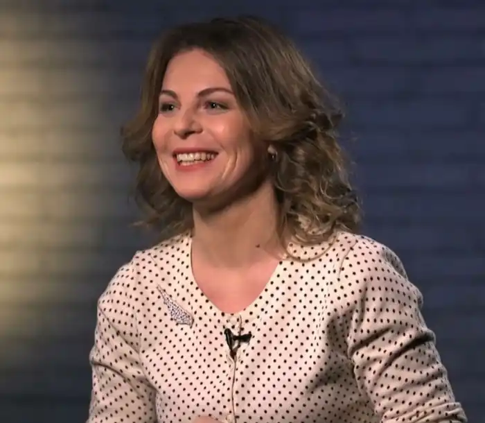

Волошина Катерина — українська поетеса, авторка 12 поетичних збірок, учасниця фестивалів та проектів Книжковий арсенал, Book Forum Lviv, Почути, Вірші вночі, Book Space, СловаRi, Демидівські вихідні, Літера.
Автор наступних книг:
2006 — "Я бачу тільки сонце" — збірка юнацького періоду (видавництво "Наукова думка"). 2009 — "Біжу у сни" — поетичні мініатюри (самвидав). 2013 — "Місяць уповні" — збірка віршів. 2015 — "Театр в сиреневом раю" — артбук, ілюстрації старшої дочки Марусі. 2017 — "Вітри" — збірка віршів, ілюстрації художниці та дизайнера Аліни Гаєвої, співвласниці (видавництво "Laurus"). 2018 — TWIXT — фото-поетичний альбом з листівками, фото режисера та кліпмейкера Віктора Придувалова. 2018 — "Sappho" — цикл із 10-ти віршів присвячених грецькій поетесі Сапфо. 2018 — "Voloshka" — збірка російськомовних віршів. 2019 — "Voloshka" — збірка україномовних віршів. 2020 — "Чорні Чорнила" — цитатник з ілюстраціями Аліни Гаєвої. 2022 — "Voloshka" — збірка віршів.